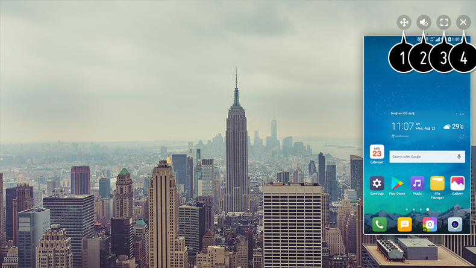

Cómo ver la pantalla del dispositivo móvil en la TV
- Habilite el modo de Screen Share en el dispositivo móvil.
- La TV aparecerá en la lista de dispositivos disponibles.
- Seleccione la TV y solicite la conexión.
- Seleccione Sí en la ventana emergente de solicitud de conexión.
- Una vez que la conexión se ha establecido, la TV se mostrará en la pantalla del dispositivo conectado.

- Cambia la posición de la pantalla del dispositivo móvil.
- Cambia entre el sonido de la TV y el del dispositivo móvil.
- Muestra la pantalla del dispositivo móvil en modo de pantalla completa.
- Salga de Screen Share.
El uso de Modo de superposición puede estar limitado dependiendo de la aplicación o el vídeo abierto.
Se recomienda actualizar siempre el dispositivo que se va a conectar a la TV a la última versión del sistema operativo para disponer de una conexión fiable.
Es posible que los dispositivos que no sean de LGE no lleguen a conectarse aunque se detecten.
Se recomienda que conecte el dispositivo a un router de 5 GHz, ya que el rendimiento puede verse afectado por el entorno de la red inalámbrica.
La tasa de respuesta variará en función del entorno del usuario.
Esto varía entre dispositivos. Para obtener más información sobre el dispositivo que desea conectar, consulte el manual de usuario del mismo.
Si la conexión falla repetidas veces, apague el televisor y el dispositivo que desea conectar y, a continuación, vuelva a encenderlos e inténtelo de nuevo.